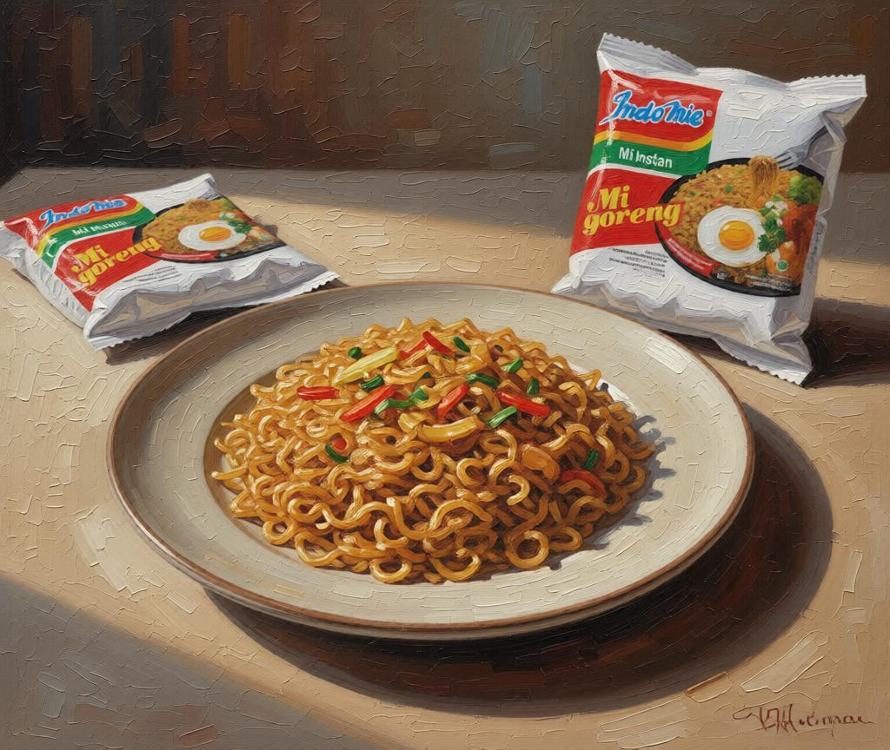

OBJECT 1 • AI-RECONSTRUCTED PAINTING, 2026
Indomie Goreng
The Taste I Don't Have to Think About
“I never thought much about Indomie Goreng when I was in Indonesia. It was cheap, easy, and always there when I wanted something familiar. In Korea, I started noticing how comforting it was to make the same thing again: the noodles, the seasoning, the sweet-salty taste I already knew by heart. Nothing about it is special, and maybe that is exactly why I keep coming back to it. Some foods become memories only after you have to leave them behind.”